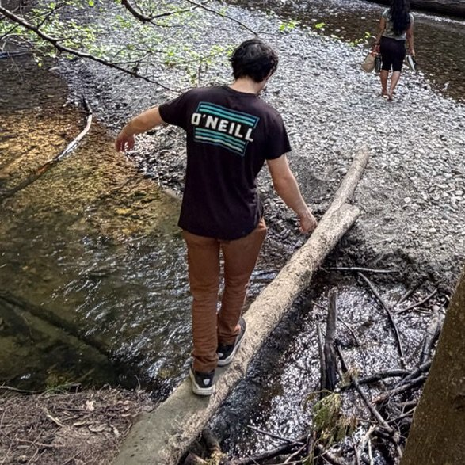

Electrical Engineering Research @ UCLA
Liam Berger
I am an Electrical Engineering undergraduate student at the UCLA Samueli School of Engineering, interested in machine learning, computer vision, robotics, signal processing, optimization, and biomedical AI. My research experience includes scalable GPU-accelerated eQTM mapping and epigenetic analysis in oncology.
Outside academia, I am usually bouldering, doing calisthenics, hiking, exploring nature around Tahoe, Yosemite, and the NorCal coast, doing photography, playing chess, or learning about neuroscience.
Please reach out by email about research collaborations, engineering projects, or job opportunities.
Selected publications

Education
Past
August 2020 - June 2025
Design Tech High School
High school diploma. Founded philosophy club, instructed rock climbing intersession. GPA: 4.68
January 2022 - May 2025
San Mateo Community College District
Concurrent enrollment coursework across 19 courses, including five math and four computer science courses. GPA: 4.00
Current
August 2025 - June 2030 expected
University of California, Los Angeles (UCLA)
B.S. in Electrical Engineering with a technical breadth in Computer Science. Extended graduation to accomodate simultaneous M.S. Member of Tau Beta Pi Engineering Honors Society. GPA: 3.97
Planned
September 2027 - June 2030 expected
University of California, Los Angeles (UCLA)
Expected M.S. in Electrical and Computer Engineering through the Departmental Scholar Program.

2030 - beyond
Graduate Study
Planning to pursue a Ph.D. in EE/CS, focused on machine learning, computer vision, robotics, or related research.
Experience
Software engineering fellow
- Building a social networking mobile app with React Native, Expo, Supabase, and PostgreSQL.
- Published the official Bruin Plans app on the iPhone App Store and continue shipping product updates.

Software engineering and applied AI mentee
- Set up a deployment workflow using Git, Docker, WordPress, and Make.
- Built Playwright tests for user flows, AI content generation, and plugin reliability.
- Collaborate with the founder on feature work, debugging, UX, and internal tooling.

Production, packaging, and delivery associate
- Prepared meals in a fast-paced kitchen, building efficient workflows to improve quality, consistency, and throughput.
- Planned routes and completed up to 12 deliveries per day across the Peninsula, optimizing for speed, accuracy, and reliability.
Data science and bioinformatics research intern
- Engineered Torch-eCpG, an open-source GPU eQTM mapping tool using CUDA-style tensor operations.
- Built bioinformatics pipelines for DNA methylation, gene expression, and covariate analysis.
- Improved trans-eCpG mapping runtime by up to 18x versus CPU-only workflows.
- Scaled analyses to 1,000 patients, 850,000 CpG loci, and 20,000 genes in under 15 hours.
Projects
Path-Following Robot Car
Code: liam-berger/ProjectCarECE3
- Implemented PD control with exponential moving average smoothing and sensor fusion to estimate distance from the center line.
- Tuned control parameters for an optimized completion time while maintaining stability through sharp high-speed turns.
G-Class Model Rocket
- Designed and launched a 26-inch-tall, 2.25-inch outer-diameter rocket with a G-class motor and roughly 1000-meter apogee.
- Optimized stability and apogee in OpenRocket using realistic flight simulations to tune component dimensions.
- Fabricated a lightweight carbon-fiber composite body tube, laser-cut fins, 3D-printed nose cone, and recovery mechanism.
Interactive Bézier curve editor and Desmos exporter
Code: liam-berger/desmoscurves
- Built an interactive Pygame editor for cubic Bézier splines with zooming, dragging, ghost segments, and sharp-point controls.
- Integrated geometric modeling tools for anchor and handle manipulation, coordinate transforms, and real-time curve rendering.
- Converted hand-drawn curves into Desmos-compatible parametric LaTeX using Bézier basis functions and segment masking.
- Added JSON persistence, versioned save/load behavior, Python package installation, and a CLI entry point for reusable tooling.
GPU-optimized eQTM MLR Python package
Code: kordk/torch-ecpg
- Developed a GPU-accelerated PyTorch pipeline for genome-wide Pearson correlations and multiple linear regressions.
- Engineered region-aware cis, distal, and trans filters with scalable chunked memory management and asynchronous multiprocessing.
- Built a CLI for data ingestion, cleaning, annotation, high-throughput correlation/regression, and memory-safe chunk optimization.
- Applied tensor algebra, vectorization, Student t approximations, and p-value filtering to analyze methylation-gene associations.
GPU-accelerated Discord emoji mosaic generator
Code: liam-berger/discmos
- Built a PyTorch computer vision pipeline that reconstructs images as custom Discord emoji mosaics with GPU acceleration.
- Implemented vectorized nearest-neighbor tile matching in HSV space with configurable channel weighting to tune mosaic fidelity.
- Converted tile matching into a batched similarity-search problem using broadcasted tensor arithmetic and a parallelized argmin.
- Developed a CLI workflow for emoji scraping, regex-based dataset filtering, asset downloading, mosaic generation, and export.
CAD and FEA simulation project
- Modeled a welded-steel gantry CNC milling machine with structural members, joint interfaces, and assembly constraints.
- Ran iterative static FEA to evaluate spindle-load deflection and gantry stiffness, then refined geometry based on simulation results.
- Selected components by balancing cost, material strength, tolerances, and load requirements for an efficient design.
Engineered and fabricated high-current welding system
- Hand-wound a high-amperage transformer circuit capable of raising spot metal temperature to 1658 C in 2 seconds.
- Designed and fabricated a bent sheet-metal enclosure and brazed copper leads for thermal management and rigidity.
- Generated detailed engineering drawings, sourced components, manufactured the system, and demoed it to conference attendees.
Skills
Software
- Python
- C++
- JavaScript
- HTML/CSS
- SQL
- Linux
- Git
- PyTorch
- CUDA
- Tensor computation
- OpenCV
Electrical and embedded
- Signal processing
- E&M physics
- PID control
- LTspice
- MATLAB
- Arduino
- ESP32
- Lab instrumentation
Mechanical and fabrication
- Fusion 360
- Onshape
- FEA
- Engineering drawings
- Metalwork
- Woodworking
- 3D printing
- Laser cutting
- Rocketry
Awards
- National Merit Scholarship Winner, 2025.
- UCLA Dean's Honors List, Fall 2025 and Winter 2026.
Honors Societies and Organizations
- Tau Beta Pi Engineering Honor Society member, 2026.
Volunteering
- Young Men's Service League, May 2021 - May 2025.
- Volunteer Mathematics Mentor at NWC High School, March 2026 - June 2026.
Contact
For research, engineering, or project notes, email is best.